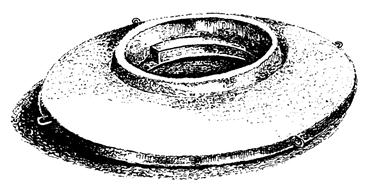
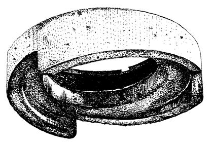
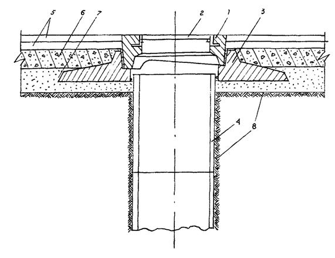
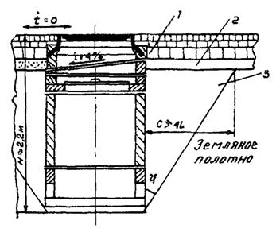
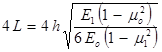
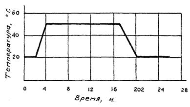
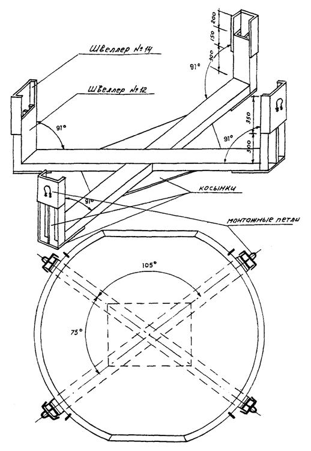
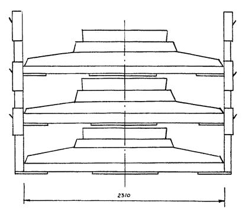

КОМПЛЕКС ПЕРСПЕКТИВНОГО РАЗВИТИЯ
Г. МОСКВЫ
УПРАВЛЕНИЕ ВНЕБЮДЖЕТНОГО ПЛАНИРОВАНИЯ
РАЗВИТИЯ ГОРОДА
УПРАВЛЕНИЕ РАЗВИТИЯ ГЕНПЛАНА
НИИМОССТРОЙ
ВЕДОМСТВЕННЫЕ СТРОИТЕЛЬНЫЕ НОРМЫ
ИНСТРУКЦИЯ
ПО ТЕХНОЛОГИИ ПРИМЕНЕНИЯ РЕГУЛИРУЕМЫХ
ОГОЛОВКОВ СМОТРОВЫХ КОЛОДЦЕВ
ПРИ РЕКОНСТРУКЦИИ И РЕМОНТЕ ГОРОДСКИХ ДОРОГ
ВСН 62-97
МОСКВА - 1997
Инструкция по технологии применения регулируемых оголовков смотровых колодцев при реконструкции и ремонте городских дорог разработана кандидатом технических наук В. М. Гольдиным, Л. В. Городецким, Р. И. Бега, А. М. Балашовым (лаборатория дорожного строительства НИИМосстроя), кандидатом технических наук А. Н. Дмитриевым (Управление развития Генплана г. Москвы).
Инструкция составлена на основе научно-исследовательских работ, выполненных лабораторией дорожного строительства НИИМосстроя, а также опыта строительства, эксплуатации и ремонта, накопленного дорожно-строительными организациями Москвы и других городов России.
Инструкция согласована с институтом Мосинжпроект и ОАО «Гордорстрой».
|
Комплекс перспективного развития г. Москвы |
Ведомственные строительные нормы |
ВСН 62-97 |
|
|
Управление внебюджетного планирования развития города |
Инструкция по технологии применения регулируемых оголовков смотровых колодцев при реконструкции и ремонте городских дорог |
Вводится впервые |
|
|
Управление развития Генплана |
|
Настоящая «Инструкция» распространяется на работы по устройству сопряжений дорожных одежд со смотровыми колодцами при новом строительстве, реконструкции и ремонте городских дорог.
Жесткость существующих конструкций колодцев значительно превышает жесткость дорожных одежд, что не позволяет обеспечить совместную их работу, в результате чего места сопряжении подвергаются многочисленным разрушениям.
Проблема решается путем уменьшения жесткости оголовка колодца, в этом случае, он становится частью дорожной одежды, вместе с которой деформируется под действием подвижных, температурных и других нагрузок, - или значительным увеличением прочности и жесткости основания и земляного полотна дороги вокруг колодца. Первый вариант наиболее эффективный и экономичный, второй - более дорогой и трудоемкий, менее эффективный, но необходимый в местах расположения кустов колодцев, где горловины колодцев расположены почти вплотную.
Наиболее предпочтительно при новом строительстве выносить подземные коммуникации за пределы проезжей части.
2.1. Конструкции регулируемых оголовков смотровых колодцев, опирающихся на упругое основание дорожной одежды, разработаны институтами НИИМосстрой и Мосинжпроект и представлены в альбоме типовых проектов 1997 года.
2.2. Регулируемый оголовок предназначен для установки на проезжей части дорог и может быть установлен как на строящихся, так и на реконструируемых и ремонтируемых участках подземных коммуникаций. Установка регулируемого оголовка производится на стандартную горловину, имеющую внутренний диаметр 700 мм. Максимальная величина регулирования по высоте 130 мм.
|
Внесены НИИМосстроем |
Утверждены: Управлением развития Генплана «22» июля 1997 г |
Дата введения в действие «1» сентября 1997 г |
2.3. Если при ремонте или реконструкции встречаются колодцы с горловиной из кирпичной кладки, то для сопряжения их с новой конструкцией оголовка необходимо разобрать верхнюю часть кладки и установить стандартное кольцо или полукольцо горловины.
2.4. Регулируемый оголовок состоит из двух изделий. Нижняя часть - опорная плита (рис. 2.1), верхняя - поворотное кольцо (рис. 2.2). Опорная плита диаметром 2300 мм имеет два среза, позволяющие перевозить его в автомобилях с шириной кузова 2150 мм. Внутренний диаметр опорной плиты составляет 882 мм, что несколько больше наружного диаметра железобетонных колец горловины, входящей внутрь опорного кольца. Горловина может входить внутрь опорной плиты на расстояние до 200 мм.
2.5. Опорная плита выполнена переменной жесткости с изменением толщины от 100 мм у краев до 200 мм у гнезда под поворотное кольцо.
Гнездо под поворотное кольцо расположено в центре опорной плиты и имеет защитный буртик и клиновые опорные площадки, по которым происходит перемещение аналогичных клиновых площадок поворотного кольца при регулировании высоты оголовка.
2.6. Поворотное кольцо выполнено в виде полого усеченного конуса, в верхней части которого замоноличена обечайка чугунного люка, а нижняя часть имеет три клиновых выступа.
Все элементы регулируемого оголовка рассчитаны на нагрузки по схемам Н-30 и НК-80. На рис. 2.3 показана конструкция сопряжения такого оголовка с дорожной одеждой и горловиной колодца.
2.7. При расположении горловин колодцев -вплотную и при отсутствии возможности применить оголовок, опирающийся на основание дороги, необходимо значительное увеличение прочности и жесткости дорожной одежды и земляного полотна на глубину 2,2 метра (рис. 2.4).
2.8. Усиление основания выполняется из уплотняемого послойно укатываемого (тощего) бетона, щебня или цементно-песчаной смеси.

Рис. 2.1. Опорная плита оголовка.

Рис. 2.2. Поворотное кольцо.

Рис. 2.3. Сопряжение оголовка колодца с дорожной одеждой и горловиной:
1 - регулировочное кольцо с вбетонированной обечайкой; 2 - крышка люка; 3 - опорная плита; 4 - горловина колодца; 5 - два слоя асфальтобетона; 6 - слой основания дорожной одежды (укатываемый бетон, щебень, крупнозернистый асфальтобетон и др.); 7 - песчаный подстилающий слой; 8 - грунт земляного полотна

Рис. 2.4. Усиление дорожной одежды вокруг колодца:
1 - асфальтобетонное покрытие; 2 - основание; 3 - щебень или уплотненный послойно укатываемый тощий бетон марки 100
2.9. Заглубление усиленного основания должно превышать глубину промерзания на 30 - 50 см. Расстояние от кромки колодца до границы укрепления основания определяется углом внутреннего трения грунта земляного полотна, но не должно быть менее четырех значений упругой характеристики покрытия:

где h - толщина покрытия;
Е1, Еo и m1, mo - модули упругости и коэффициенты Пуассона материала плиты и упругого основания.
3.1. Для приготовления бетонной смеси должны применяться бездобавочные портландцементы марки не ниже 400, отвечающие требованиям ГОСТ 10178-85*. Содержание в клинкере цементов трехкальциевого алюмината C3A должно быть не более 7 %.
3.2. Для приготовления бетонной смеси применяются природные, кварцевые и полевошпатовые пески или с добавками. В качестве добавок могут применяться искусственные пески, получаемые дроблением прочных морозостойких пород.
Пески должны удовлетворять требованиям ГОСТ 8736-85, ГОСТ 10268-80. Модуль крупности песков должен быть более 2,1. Содержание глинистых, илистых и пылеватых частиц в песке должно быть менее 3 % по массе.
3.3. Щебень для приготовления бетонной смеси следует применять из горных пород по ГОСТ 8267-82* с размером зерен не более 20 мм. Содержание глинистых, илистых и пылевидных частиц не должно превышать 1 % по массе. Марка щебня по прочности должна быть Др 14-16 (120 - 140 МПА).
3.4. Для получения бетонных смесей следует применять добавки типа суперпластификаторов на основе меламиноформальдегидных и нафталиноформальдегидных сульфированных смол, из которых наиболее распространенным является С-3. Промышленный выпуск этой добавки налажен на Новомосковском заводе «Оргсинтез» в соответствии с ТУ 14-628-80 Минхимпрома.
3.5. Добавки-суперпластификаторы выпускаются в виде порошка или раствора различной концентрации. Добавки, поставляемые в растворе, должны отвечать требованиям табл. 3.1.
Характеристика суперпластификаторов
|
Свойства суперпластификаторов |
Размерность |
Показатели |
|
Содержание твердых материалов |
% |
20 - 40 |
|
Плотность |
г/см3 |
1,1 - 1,22 |
|
Водородный показатель |
РН |
7 - 9 |
|
Вязкость |
сп |
20 - 45 |
Расход материалов для изготовления одного оголовка
|
Показатели |
Опорная плита |
Регулируемое кольцо |
Всего |
|
Расход бетона, м3 |
0,52 |
0,107 |
0,627 |
|
Масса бетона в изделии, кг |
1237,6 |
254,16 |
1491,26 |
|
Процент фибры при дисперсном армировании, % |
3 |
3 |
3 |
|
Расход стальной фибры, кг |
37,128 |
7,6398 |
44,7678 |
|
Расход арматуры, кг |
22,65 |
1,117 |
23.767 |
|
Общий расход материала, кг |
59,778 |
8,7568 |
68,5348 |
Более рационально получать добавку в виде порошка.
3.6. Вода для приготовления бетонной смеси должна удовлетворять требованиям СНиП Ш-В.1-70 «Бетонные и железобетонные конструкции монолитные. Правила производства и приемки работ».
3.7. Основным вариантом армирования элементов оголовка, как наиболее технологичным и менее трудоемким, следует применять дисперсное армирование стальной фиброй по ТУ 1276-001-40610949-95, разработанному ЗАО «Фирма «Диона».
3.8. Стальная фибра длиной 40 мм вводится в смесительный барабан одновременно с остальными компонентами (за исключением воды), и сухая смесь перемешивается предварительно в течение 2 - 3 минут. Расход бетона, фибры и арматуры для изготовления элементов оголовка приведен в табл. 3.2.
3.9. Изготовление элемента оголовка осуществляется в металлических, пластиковых или других формах, обеспечивающих требуемую прочность изготовления изделий в соответствии с типовым альбомом рабочих чертежей. НИИМосстрой располагает рабочими чертежами металлической опалубки, откорректированной для серийного изготовления. В Москве изготовление освоено совместно ЗАО «Фирма «Диона» и ОАО «Энергостройконструкции».
3.10. Приготовление бетона с дисперсным армированием не требует специального смесительного оборудования и осуществляется на обычном традиционном оборудовании.
При распалубке изделий требуется подъемник или кран грузоподъемностью 3 т при вылете стрелы 1,5 - 2 м.
3.11. Для изготовления оголовка следует применять жесткие бетонные смеси, модифицированные С-3, предпочтительно на портландцементе М-500 Белгородского завода. Класс бетона дорожного по прочности на сжатие В 30, по морозостойкости F 200 при испытании в солевых растворах, водопоглощение не более 5,0 % по весу.
3.12. Ориентировочный режим гидротермальной обработки изделий при влажности, близкой к 100 %, приведен на рис. 3.1.
Продолжительность гидротермальной обработки уточняется в каждом конкретном случае в зависимости от качества материалов и технологических особенностей изготовления.
3.13. Отпуская прочность изделия должна быть 100 % в любое время года.
3.14. Ориентировочный состав бетонной смеси: вода - 165 л; цемент портландский М-500 - 440 кг; щебень гранитный фракции 5 - 20 - 1200 кг; песок с модулем крупности не менее 2,1 - 575 кг; добавка С-3 - 0,7 - 1 % от массы цемента; фибра с модулем 4 (40 мм длиной) - 3% от массы бетона.

Рис. 3.1. Ориентировочный режим гидротермальной обработки железобетонных элементов сборного оголовка
4.1. Для складирования и транспортировки автотранспортом с шириной кузова не менее 2140 мм используют специальную инвентарную оснастку (рис. 4.1, 4.2).
4.2. Инвентарная оснастка выполняется из металла, в основном швеллера № 12 и № 14, и весит около 300 кг.
Конструкция оснастки позволяет устанавливать изделия одно на другое в штабели и надежно фиксирует их от возможных перемещений.
4.3. Оголовки должны складироваться в сборе, регулировочные кольца должны быть ввернуты полностью.
4.4. При складировании в штабеле должно быть не более шести оголовков. При перевозке автотранспортом не более 3-х оголовков, при этом высота борта должна быть выше подошвы верхнего оголовка.
4.5. При транспортировании оголовков оснастки автотранспортом с шириной кузова не менее 2140 мм, оголовки в сборе укладываются в рабочем положении по одному комплекту без опирания друг на друга.
5.1. Доставленные на место строительства оголовки смотровых колодцев разгружаются, а затем устанавливаются легкими стреловыми кранами.
5.2. При новом строительстве перед укладкой опорной плиты оголовка колодца на упругое основание производится тщательная подготовка и уплотнение (коэффициент уплотнения не менее 0,98) зоны основания вокруг колодца с определением отметок по нивелиру. При этом ровность подготовленного основания не должна иметь отклонений от проектной более ± 3 мм.
5.3. Конструкция основания устраивается такая же, как под строящимся покрытием дороги, но непосредственно перед укладкой опорной плиты с целью достижения плотного контакта ее с основанием и равномерного распределения нагрузки на нижележащие слои, устраивается прослойка из рыхлого сухого песка, песчано-цементной смеси или очерненного песка толщиной 5 см.

Рис. 4.1. Инвентарная оснастка для складирования и транспортировки оголовков

Рис. 4.2. Схема складирования оголовков и их перевозки автотранспортом
5.4. При установке плиты на упругую отметку необходимо убедиться в наличии плотного контакта опорной поверхности и основания с помощью пробных предварительных посадок плиты. За полное опирание можно принимать такое опирание, при котором контакт с основанием достигнут на 95 % площади.
5.5. После укладки опорной плиты, которая должна быть тщательно отцентрирована, устанавливается поворотное регулировочное кольцо с вбетонированным в него люком. При строительстве новых колодцев регулировочное кольцо должно быть уложено на тщательно очищенную опорную поверхность плиты и повернуто по часовой стрелке до упора.
Регулировочное кольцо свободно устанавливается на опорную плиту без герметизации и заделки окон клиньями или раствором.
5.6. После установки оголовка производится устройство дорожной одежды в соответствии с проектом. При уплотнении нижних слоев дорожной одежды, расположенных над опорной плитой оголовка, следует избегать наезда на нее тяжелых катков, а уплотнение производить виброплощадками, ручными вибротрамбовками и легкими катками.
5.7. При последующих ремонтах покрытий для точной подгонки люка колодца под проектную отметку дорожного покрытия регулировочное кольцо выдергивается, вывешивается и путем поворота (вывинчивания) устанавливается в проектное положение.
Запаса хода регулировочного кольца хватает на 3 ремонта, при этом минимальная длина опорной площадки зубьев составляет 80 - 90 мм.
5.8. При реконструкции проезжей части следует разбирать дорожную одежду для укладки опорной плиты с полностью ввернутым регулировочным кольцом на нужную отметку; в этом случае также устраивается рыхлая прослойка толщиной 5 см из цементно-песчаной смеси, песка или очерненного песка.
5.9. Горловины, выполненные из кирпичной кладки в верхней части высотой 0,5 - 1,0 м, заменяются стандартными железобетонными кольцами.
5.10. При установке оголовков на уклонах они легко устанавливаются в проектное положение, благодаря телескопическому соединению оголовка с горловиной и технологическому зазору между ними.
5.11. В табл. 5.1 приведена ведомость сопоставимых технологических операций строительства, ремонта и реконструкции сопряжении дорожной одежды со смотровыми колодцами по рассматриваемому варианту (новая техника) и эталону (старая техника).
Ведомость сопоставимых технологических операций
|
№ п/п |
Старая техника |
Новая техника |
|
СТРОИТЕЛЬСТВО |
||
|
1. |
Доставка люков, кирпича и раствора |
Доставка оголовков на трейлерах или бортовых машинах |
|
2. |
Устройство промежуточного кольца между сборной горловиной и обечайкой люка из кирпичной кладки |
Укладка оголовков на подготовленное основание |
|
3. |
Установка обечайки на монолитный бетонный поясок высотой 5 см и ее омоноличивание |
|
|
РЕМОНТ |
||
|
1. |
Покрытие дорожной одежды разрушенного участка (площадь 3 м2, глубина 0,5 - 0,6 м) |
|
|
2. |
Разборка кирпичной кладки и устройство нового кольца из кирпича |
|
|
3. |
Очистка обечайки, установка ее на монолитный бетонный поясок высотой 5 см и омоноличивание |
|
|
4. |
Укладка и уплотнение конструктивных слоев основания и покрытия дороги вокруг кольца |
|
|
КАПИТАЛЬНЫЙ РЕМОНТ ИЛИ РЕКОНСТРУКЦИЯ |
||
|
1. |
Вскрытие дорожной одежды вокруг люка колодца (площадь 5 м2, глубина 0,5 - 0,6 м) |
Подъем и установка в новое проектное положение регулировочного кольца путем его поворота (вывинчивания). В случае необходимости, установка всего оголовка в новое проектное положение |
|
2. |
Разборка кирпичной кладки и устройство нового кольца из кирпича |
|
|
3. |
Очистка обечайки, установка ее на монолитный бетонный поясок высотой 5 см и омоноличивание |
|
|
4. |
Укладка и уплотнение конструктивных слоев основания и покрытия дороги вокруг колодца |
|
5.12. При строительстве колодцев с жестким опиранием на рабочую камеру и упрочненным основанием повышенной жесткости уплотнение основания вокруг колодца следует производить особенно тщательно, слоями не более 20 см, и при этом строго выдерживать рекомендуемые в разделе 2 размеры основания по глубине и в плане.
6.1. При изготовлении и применении регулируемых оголовков должен осуществляться систематический контроль за соблюдением требований настоящей инструкции. Контроль возлагается на инженерно-технический персонал и лабораторию фирм, производящих работы.
6.2. При изготовлении оголовков следует контролировать:
- испытания и качество материалов для бетона;
- проектирование состава бетона;
- правильность хранения материалов на БЗ;
- приготовление бетонной смеси, ее однородность, подвижность и жесткость;
- соответствие прочности бетона заданной марке;
- транспортирование;
- уход за бетоном после выхода из пропарочной камеры;
- введение технической отчетности по контролю.
6.3. Все материалы для приготовления бетонной смеси подлежат испытаниям согласно соответствующим нормативным документам, ГОСТ и ТУ.
6.4. Подбор состава бетона выполняется лабораторией дорожного строительства НИИМосстроя. Контроль состава бетона с учетом фактической влажности материалов и дозировку материалов на замес ежедневно устанавливает заводская лаборатория.
6.5. Цемент, поступающий на завод, должен храниться в сухих закрытых банках раздельно по маркам и заводам-изготовителям. Песок и щебень должны храниться в штабелях на площадках с усовершенствованным покрытием во избежание загрязнения.
6.6. Приготовлять бетонную смесь разрешается только в исправных бетонных смесителях, снабженных бункерами или дозаторами для песка и щебня в соответствии с принятым фракционированием их, а также емкостями для добавок. Контрольные проверки дозаторов и выхода бетона производят в процессе работ не реже одного раза в месяц.
6.7. Проверяют также последовательность загрузки всех материалов, продолжительность перемешивания, однородность и исходную подвижность (жесткость) бетонной смеси:
6.8. Для контроля подвижности смеси на заводе отбирают пробы в начале, середине и конце выгрузки смеси из бетономешалки.
6.9. Контроль прочности бетона состоит в изготовлении контрольных образцов из бетонной смеси и испытании их в установленные сроки в соответствии с ГОСТ 10180-90. Бетон соответствует требованиям, если ни одна из испытанных в возрасте 28 суток партий по прочности на изгиб не будет ниже 95 % проектной марки и по прочности на сжатие - не ниже 90 % проектной марки.
6.10. Серию контрольных образцов на заводе отбирают каждую смену независимо от объема изготовленного бетона, если же в смену выпускается более 200 м3 смеси - два раза в смену.
Каждая серия контрольных образцов должна состоять из трех кубов размером 20×20×20 см и трех балочек размером 15×15×40 см. Разрешается изготовлять кубы размером 10×10×10 см с введением переходного коэффициента.
6.11. Поверхность изделий должна быть ровной, без бугров, раковин, трещин, окопов и не превышать отклонений от проектных размеров.
7.1. При погрузочно-разгрузочных работах, монтаже и демонтаже оголовков необходимо строго соблюдать технические правила производства монтажных работ в соответствии с требованиями норм и правил техники безопасности СНиП III-4-80. Проверка исправности всех монтажных приспособлений и кранов должна быть проведена до начала погрузочно-разгрузочных и монтажных работ. Рабочие-монтажники должны пройти инструктаж по технике безопасности.
7.2. К строительным работам допускают рабочих не моложе 18 лет, прошедших специальную подготовку и инструктаж по технике безопасности.
7.3. За соблюдение правил техники безопасности при строительстве дорог несут ответственность главный инженер строительного управления и производитель работ. Места производства работ должны быть ограждены. С наступлением темноты в зоне работ должны быть установлены сигнальные лампы красного цвета.
7.4. Марка крана, зона работ, условия безопасной работы крана определяются проектом производства работ.
7.5. При монтажных работах по устройству колодцев рабочие должны находиться вне пределов опасной зоны, заключенной внутри круга, радиус которого на 5 м больше вылета стрелы крана. Перемещение стрелы крана с грузом над кабиной автомашины запрещается.
7.6. Канаты (тросы) чалочных приспособлений выбирают в соответствии с ГОСТ 3079-80*, ГОСТ 2688-80*.
7.7. Для обеспечения безопасности хранения оголовков в штабелях, их следует складировать в инвентарных контейнерах на специально подготовленные для этого площадки у трассы дороги в количестве 6 штук. Расстояние между штабелями должно быть не менее 0,8 м (рис. 4.1, 4.2).
7.8. Для обеспечения безопасности разворотов автомобилей на строящейся дороге следует устраивать специальные временные уширения - площадки или временные съезды. При движении автомобилей задним ходом к месту укладки плит следует обеспечить безопасность движения и подачу сигналов лицам, находящимся на пути движения.
7.9. В зимнее время пути перемещения рабочих должны быть очищены от снега и льда и посыпаны песком. Участки строительства должны быть оборудованы специальными помещениями для обогрева рабочих, отдыха и принятия пищи в соответствии с указаниями СН 245-83. Для обогрева рабочих устанавливаются периодические перерывы в работе продолжительностью 10 мин. при температуре от - 20 °С до - 30 °С и полное прекращение работ при температуре ниже - 30 °С.
7.10. Категорически запрещается лицам, не имеющим специального удостоверения, управлять механизмами и ремонтировать их. За исправность машин и механизмов несет ответственность начальник участка управления механизации.
7.11. Рабочие должны быть обеспечены специальной одеждой и исправным инструментом в соответствии с действующими нормами.
8.1. Необходимо осуществлять мероприятия и работы по охране окружающей природной среды согласно СНиП 3.01.01-85 «Организация строительного производства».
8.2. Слив воды от промывки автобетоносмесителей производить в места, предусмотренные в ППР.
8.3. Территория стройплощадки после окончания работ по устройству дороги должна быть очищена от строительного мусора и спланирована по проектным отметкам.
СОДЕРЖАНИЕ